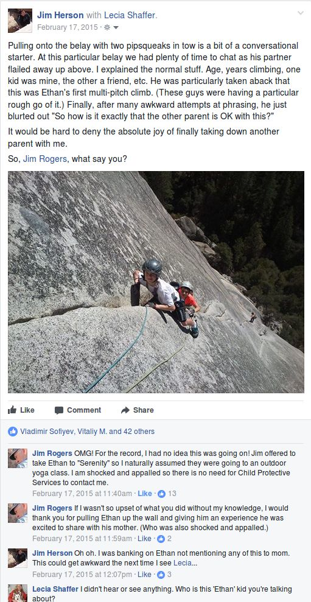
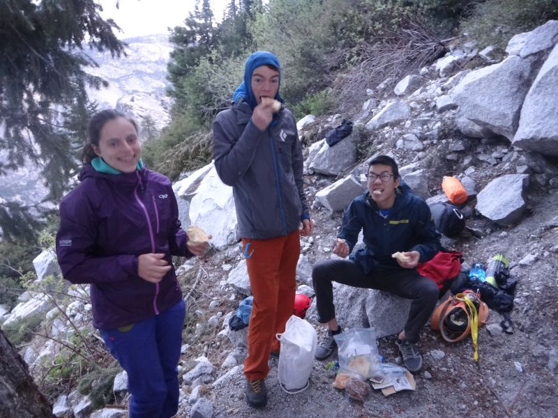
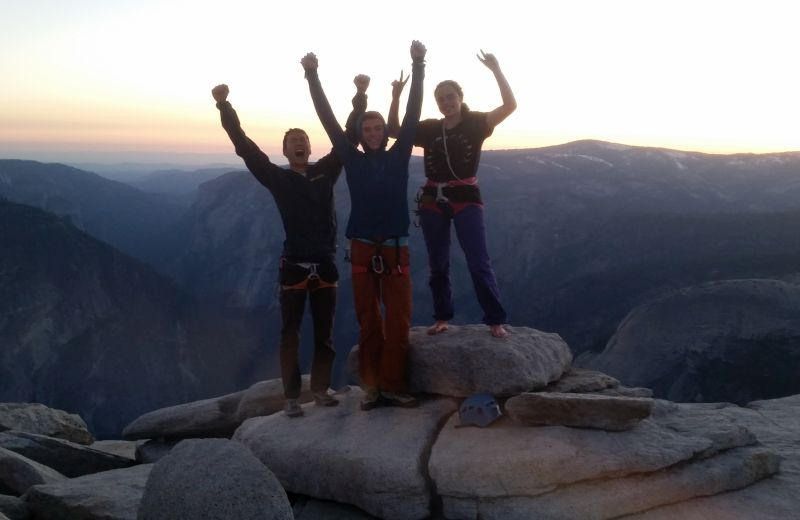

Half Dome with 3 kids, 6/3/17
Teenagers: the best kept secret in parenting. After making tens of billions of babies, we still can't decide if the wrinkled little noise makers should sleep pudgy belly up or down. Ask any two [Bay Area] parents if precalculus should be a preschool prerequisite or just accelerated in kindergarten and you'll get three vehemently argued, scientifically proven, diametrically opposing opinions. The only universally agreed among parental creed is that teenagers are nightmares.
Nothing could be further from the truth.
Yes, some teenagers are tough. And some parents are awful. Big deal. The vast majority of teens rock! Or at least the teens I'm exposed to -- nerds, climbers, and nerdy climbers.
There's something magical about every age. The toddler learning to walk and run, although not necessarily in that order. The sponge like language skills of the 2-6 year old. The hilarious questions of the 7-10 year old. The awful puns of the 11-12 year old. But nothing entertains like the teen. They are wickedly funny, smart, talented, and clueless.
That dichotomy of insane talent and complete cluelessness could not be more perfectly captured than in this photo of the Tim and Ross show taking on the long, uniform cracks of Moab with a single #1 red camalot!
Tim and Ross are two of the nicest, strongest, and most talented bay area youth crushers. And yet totally clueless. Look carefully on Ross' left for their "desert rack". For reference, here is Connor's Moab rack:
Tim and Ross are crazy strong boulders. Nevertheless, sick crimp strength and a #1 red camalot isn't always sufficient for desert cracks requiring a dozen of the same size pieces:
The Tim and Ross single #1 red camalot photo sent me into an existential tail spin. Sitting back and watching a major epic slowly unfold is what I live for. See Cris and her zero preparation for El Cap. Or Eric and any climb. Or Rob and life. Any yet, I couldn't help myself. Tim and Ross are just too nice. I had to launch an intervention. Unable to resist preventing the comic epic that would have been the Tim and Ross crack climbing show, rocked me to my core. But it's just that I have way too much baggage from not having intervened early with another talented redheaded climbing goofball:
Jim: "I'm thinking of taking Tim and Ross up Half Dome."
Anne: "Why would you do that?"
Jim: "Because they went to Moab with a single #1 red camalot."
Anne: "So?"
Jim: "It's not like these trip reports write themselves. At least not since Rob refuses to climb with me."
Anne: "Good trip report material isn't a reason to take boulderers up Half Dome!"
Jim: "They're young. There's still time to correct their juvenile missteps. Bouldering can be eradicated if caught early enough."
Anne: "Ross has never climbed a multi-pitch climb."
Jim: "Tim has climbed one. He can teach Ross."
Anne: "Oh, for goodness' sake! Just take Kara along so at least you'll have some adult supervision."
There's the old joke: Men marry hoping their wives never change. Women marry hoping their husbands will. Both are disappointed. In our case, it's not disappointment. It's just quiet exasperation on Anne's part. After 30 years of marriage, Anne just shook her head in dismay that I thought it a good idea to take three teens -- two totally clueless boulderers -- up Half Dome for a first multi-pitch climb.
While Anne's grown accustomed to -- which should in no way be confused for the embracing of -- my climbing brainstorms over these past 30 years, Ross' mom, Paige, has not.
Although not a climber, Paige has been around climbing and Ross long enough that Half Dome as a first climb did set off some maternal alarms. Not a problem. Erika's Letter of Recommendation has saved me from innumerable tense concerned parent conversations and Child Protective Services hearings. So when Paige awkwardly asked if I was remotely qualified to take two inexperience teens up Half Dome, I, once again, ducked behind Erika's letter. I sent Paige Erika's letter to assuage her concerns. Kind of a shame too. Paige is such a nice woman. She was just desperate for some plausible deniability and all I could come up with was Erika's letter. Sorry about that Paige. It's just that I get a perverse joy in taking down other parents with me. Watching the quick thinking Jim Rogers try to desperately backpedal is still one of my all time favorites:

And so with two clueless boulderers and Kara -- who rescheduled her finals to bail out her dad once again -- we headed to the Valley.
If only a great positive attitude alone could get you up Half Dome. The boys' attitude and psyched was pinned. But the conversation on the drive up was worrisome. Tim's animated description of enduring the [1/2 mile flat] hike to Tuolumne's Drug Dome bouldering was not reassuring. We were about to start a 3 hour, 2000' elevation gain hike up the Death Slabs in direct sun. But more worrisome, and fascinating, was the indefatigable illogic of the teenage brain. Tim and his two loopyhead bouldering buddies turned a 7 hour drive to Bishop this winter into a 16 hour all night epic. With a winter storm brewing, they couldn't be bothered to check their phones for road conditions because, well, it's difficult to get teens interested in their phones. So they drove up hwy 120 to the pass to find it closed. Undeterred, and not bothering to check their phones again for road conditions, they drove up hwy 108 to the pass to find it closed. Same with hwy 4. That teens would gratuitously add 9 hours to a 7 hour drive rather than check their phones, all for an hour winter night bouldering session in Bishop, is fairly typical of the teenage brain. The worrisome part was that Tim spent most of the drive to the Valley defending it?! He tried to argue that driving passed the flashing "PASS CLOSED" sign was totally reasonable because the gates down low were open. Huh??? While I'm fascinating by the workings of the teenage mind, this was not at all a reassuring bit of reasoning from the kid who was about to belay me up a 2000' wall!
Having my confidence in the wisdom of taking three teens up Half Dome badly shaken, we headed up the Death Slabs.

Tim's big wall packing did nothing to restore my rapidly diminishing confidence:
But the kids pounded up the the Death Slabs in color coordinated style.
Until we hit two of the scariest sights in the Yosemite backcountry -- a bear and a boulderer!
That taking a 7th grader up El Capitan without jumars was the training run for taking the Tim and Ross show up Half Dome says all you need to know about boulderers. Yet, even with all my meticulous mental training for dealing with boulderers, I was pushed to dig deep. Real deep. The teenage mutant boulderers ogling every 5ft pebble for a "sick crimp!" on the approach while oblivious to the towering 2000ft gorgeous granite face right smack in front of them brought me to the brink. I finally lost it when they found the "sick pinch!" on the snow cave at the base!
Fortunately, the bouldering addled knuckleheads finally glanced up and noticed the most magnificent granite face in the world; the sheer Northeast face of Half Dome!
We bivied at the base although the relentless mosquitoes nixed any actual sleeping. I was too lazy to pack a stove so I brought some quiche for breakfast. And this is why I love Anne. Without in any way, shape, or form suggesting three kids on Half Dome was a remotely good idea, Anne was aghast that I had packed a broccoli quiche for breakfast rather than a bacon quiche which she insisted is much easier to get down in the early morning. As usual, Anne was correct. But we prevailed and choked down the obscenely overpriced Whole Foods broccoli quiche.

Almost lost Tim at the base as the icy approach proved to be a challenging for the boulderer who found the Drug Dome approach arduous.
But such is the wonderful incoherence of the teenager. Yeah, they couldn't be bothered to check their phones to avoid driving an extra 9 hours to find three passes closed. And yeah, they couldn't help fondling every "sick dyno" on the nondescript tiny blocks of granite on the approach while surrounded by all of Yosemite Valley's transcendent cliffs. But strap a pair of climbing shoes on these loopyhead boulderers and watch out!! With zero crack climbing skills, I had no worries that these kids would crush Half Dome. That's just how talented they are. My only worry was that they'd embarrass me by campusing the entire 2000' face. So while it wasn't bouldering, they still had a blast crushing it!!! No matter what Half Dome threw at them, their smiles never faltered.

And here's the beauty of the teenage brain. I told them if they walked Thank God Ledge I'd buy them a burrito. So of course the meatballs tried!

Purging that bouldering nonsense from their blood proved even more difficult than I had anticipated. Rather than an effortless 5.7 chicken wing:
The mutant boulderers insisted on turning it into a V10 crimp:
Or whatever the heck this only-a-boulderer-would-think-of move is:
But the kids did an awesome job. Crushing 22 gorgeous pitches and having a blast every step of the way.

There's no truer nor more understated parental cliche than they grow up in a flash. It's mind boggling that it's been six years since Kara's first Half Dome!
Topped out at sunset and hiked back to the base. The snow and ice fields contouring around the front of the Dome made for the most treacherous part of the day. But since Tim and Ross' parents might read this trip report, that part has been redacted.
Finally made it back to the base where our phones lit up from the day's news.
Anne: "Alex just did the one thing that could make taking three teens up Half Dome look reasonable."
Jim: "Alex is a great guy! I owe him."
The news of Alex's solo rocked me. A great feat for sure. But it froze my blood. A hundred years ago, I stumbled back to the Valley floor after my first Half Dome which was an epic of Eric proportion. The Valley was a buzz with news that Skinner and Piana had freed the Salathe Headwall. I didn't know what the Salathe nor the Headwall was, but in my whipped, beaten, broken, post first wall stupor it made an impression. It changed the direction of my climbing for the next decade. I have no worries about Kara. Her head is screwed on straight. But Tim and Ross are vulnerable. They were willing to risk it all to walk Thank God Ledge for a soggy burrito. If they ever entertain free soloing I will never forgive myself for taking them out of the gym and introducing them to big walls.
I need not have worried. The next week the greatest El Cap feat of all time went down: The Naked Nose In A Day! There is nothing that captivates the teenage brain like nakedness. Whatever fleeting delusions of grandeur Tim and Ross might have had about free soloing, they were long sent packing once they saw this photo: